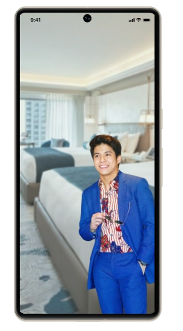

Check in, chill, and stay
for the thrill at
Peter’s Hotel!
"A hotel that will melt away your tiredness and offer you the perfect escape from the hustle and bustle of daily life."
Download App

"A hotel that will melt away your tiredness and offer you the perfect escape from the hustle and bustle of daily life."
Download AppPeter’s Hotel is more than just a place to stay, it is a place where comfort meets elegance, and every guest is welcomed with warmth and sincerity. Designed with both leisure and business travelers in mind, our hotel offers a harmonious blend of modern amenities and timeless hospitality. We believe that everyone deserves a space to relax, recharge, and enjoy life’s simple pleasures, which is why we have created an environment that feels like home the moment you step through our doors. Each room is thoughtfully designed with cozy interiors, stylish furnishings, and smart features to ensure both comfort and convenience. Guests can enjoy high-speed Wi-Fi, 24/7 room service, in-room entertainment, and access to wellness facilities like a fitness center and spa. Our in-house restaurant serves a delightful variety of dishes to satisfy diverse palates, while our courteous staff remains dedicated to making every stay a memorable one. Whether you are traveling for work, vacation, or a weekend retreat, Peter’s Hotel is your destination for quality, care, and genuine hospitality. Located in a vibrant area close to city landmarks, shopping centers, and transport links, the hotel offers easy access to everything you need. We take pride in being a hotel for everyone, where inclusivity, comfort, and unforgettable experiences are part of every stay. Discover why so many guests return time and again, and let Peter’s Hotel be your trusted home away from home.